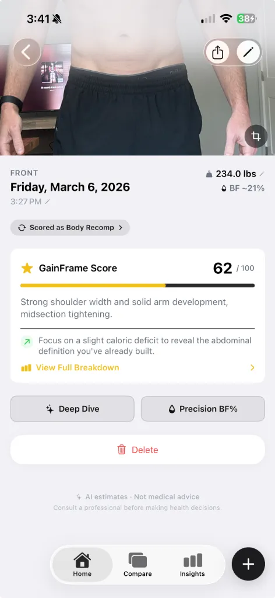

Why Your Body Fat Score Is Wrong (It Might Not Be Your Body)
That frustrating low score might have nothing to do with your actual physique. Here's how to separate photo problems from real plateaus.
You take a progress photo after a solid 8-week cut. You feel leaner. Your clothes fit better. You step on the scale and you're down 6 pounds. Then the AI scores your photo and gives you a 52 — lower than last month.
Your first thought: "I'm not making progress." But that's probably wrong. The score dropped because of the photo, not your body.
Most people don't realize how dramatically lighting, camera angle, and distance affect any visual body composition reading. A harsh overhead light can erase visible muscle definition. A slightly off-center angle can flatten your V-taper into nothing. Stand two feet farther from the mirror and your proportions compress.
The problem isn't the AI. The problem is your photo setup changed between sessions, and the AI is faithfully scoring what it actually sees.

The two things that affect your body fat score
Every visual body composition score is influenced by exactly two categories of factors. Understanding them changes how you interpret every reading you get.
Photo factors (things that aren't your body)
These have nothing to do with your physique, but they can swing your score by 10–15 points:
- Lighting: Flat overhead light erases shadows and hides muscle separation. Side lighting or natural light from a window dramatically improves visible definition.
- Camera angle: A straight-on front shot shows your shoulder width honestly. Tilting the camera even 10 degrees can flatten your frame or exaggerate your midsection.
- Distance: Stand too far from the camera and fine details like vascularity, striations, and ab separation disappear. Stand too close and proportions distort.
- Clothing: Loose tanks and baggy shorts hide your actual structure. Fitted clothing or minimal clothing reveals what the AI needs to see.
Physique factors (things that are your body)
These are the real signals that reflect your training and nutrition:
- Visible body fat: Subcutaneous fat around the midsection, love handles, and face.
- Muscle development: Fullness, separation, and definition across shoulders, chest, arms, back, core, and legs.
- Proportions: How your muscle groups relate to each other — V-taper, shoulder-to-waist ratio, upper vs. lower body balance.
- Vascularity and striations: Fine-detail indicators of low body fat and muscle maturity.
If your photo setup is inconsistent, the AI will confuse photo factors with physique factors. Your score fluctuates, and you lose confidence in the trend.
How Score Insights separates photo from physique

GainFrame's Score Insights breaks every score into two clearly labeled sections: Photo Factors and Physique Observations.
Photo Factors tells you exactly how your photo setup affected the score. It might say: "The front-on mirror angle gives a clear view of your torso and shoulder width" or flag that "harsh lighting is washing out detail in your midsection."
Physique Observations tells you what the AI actually noticed about your body — shoulder capping, midsection definition, emerging vascularity, or areas carrying extra softness. This is the section that reflects real progress.
When your score drops, you check the breakdown. If the Photo Factors section flags lighting or angle issues, you know the drop isn't real. If Physique Observations shows changes you don't like, you know where to focus your training.
The coaching tip that tells you exactly what to do next
Every Score Insights breakdown ends with a personalized Tip for Next Time. This isn't generic advice like "eat less and exercise more." It's specific to what the AI saw in your photo.
For example: "Try a side-profile shot next time to show off your chest thickness and arm development."
The tip might target your photo technique (better angle, better lighting) or your training (focus on a lagging muscle group to push your score higher next session). Either way, you walk away knowing exactly what to change.
Quick checklist: standardize your progress photos
The simplest way to get accurate, comparable scores every time:
- Same location, same time of day
- Natural side lighting from a window — avoid direct overhead lights
- Camera at chest height, 4–5 feet away
- Same minimal clothing every session
- Fasted or at the same time relative to meals
- Same poses in the same order
Consistency in your photo setup turns your score trend into something you can actually trust over weeks and months.
Stop guessing. Start reading the breakdown.
A single number without context is noise. A score with a breakdown telling you exactly what influenced it is data.
Here's the framework:
- Take your photo using the standardized checklist above.
- Check your score — but don't react to the number alone.
- Read the breakdown. Were Photo Factors flagged? That's a setup issue, not a body issue.
- Focus on Physique Observations. That's your actual progress.
- Follow the coaching tip. Improve your photo technique or target a lagging muscle group.
- Reassess every 4–8 weeks using consistent photos. The trend is what matters.
A bad score from a bad photo doesn't mean a bad physique. Score Insights shows you the difference — so you never mistake a lighting problem for a plateau.